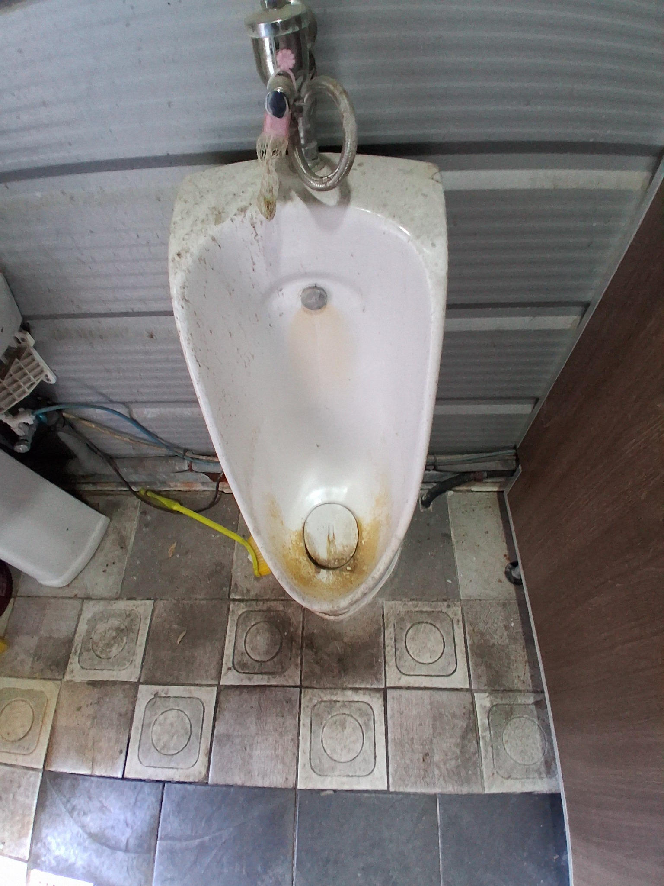
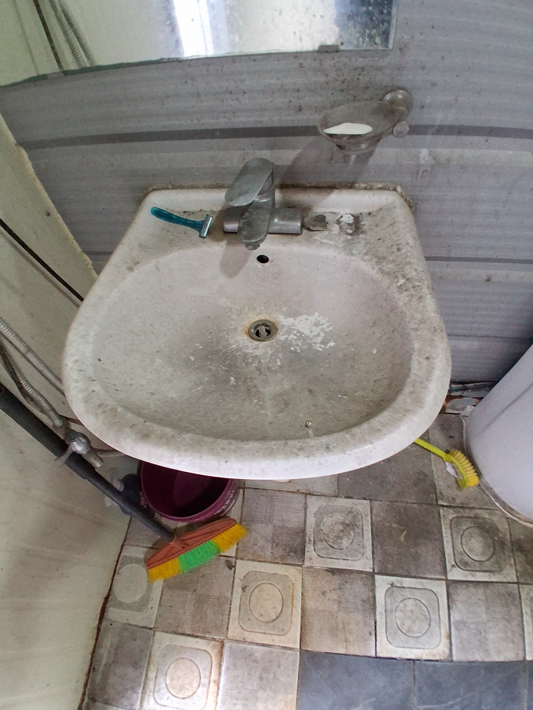
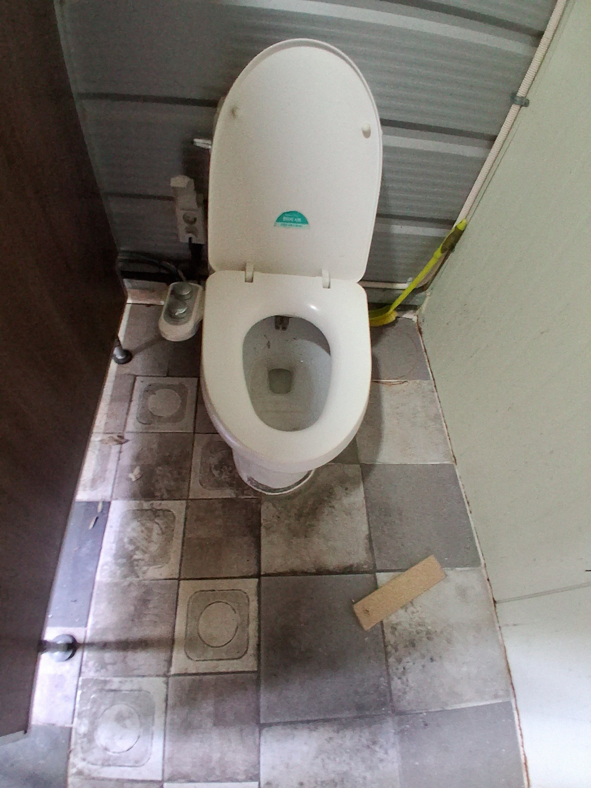
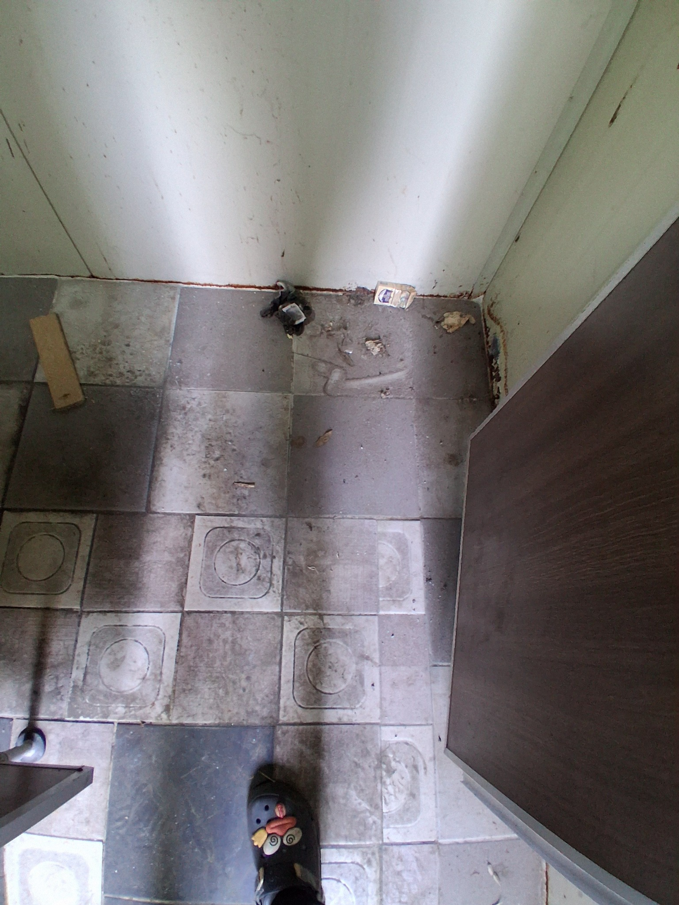
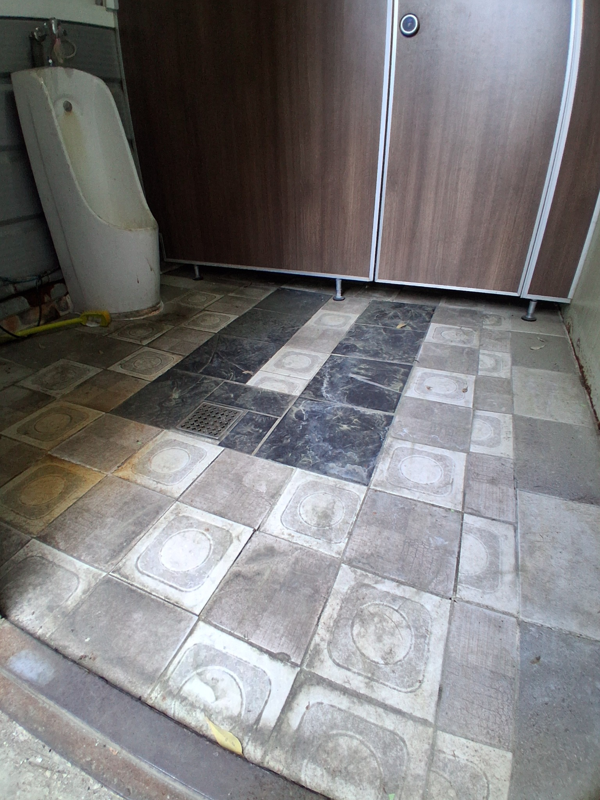
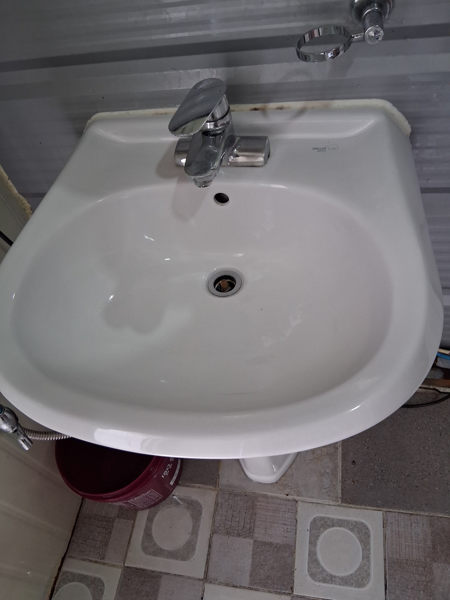
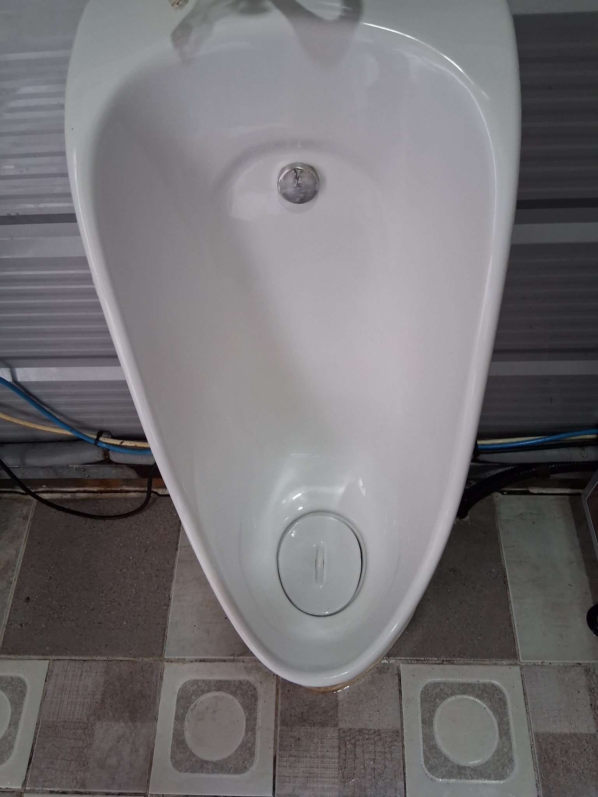
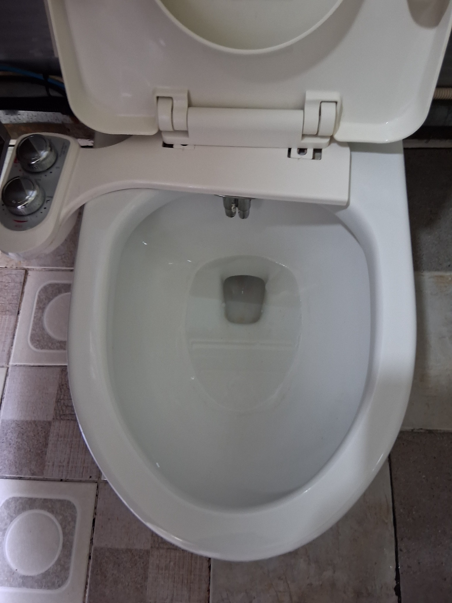
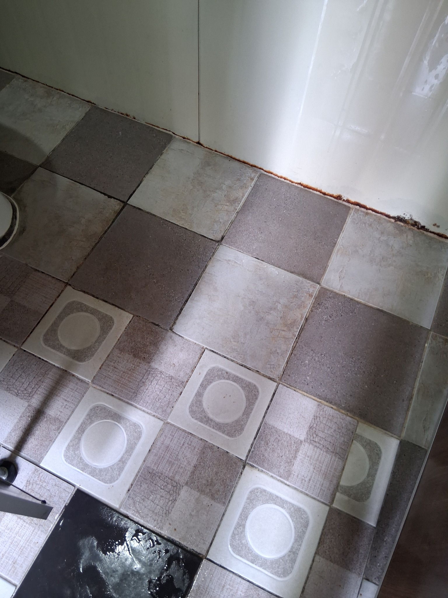
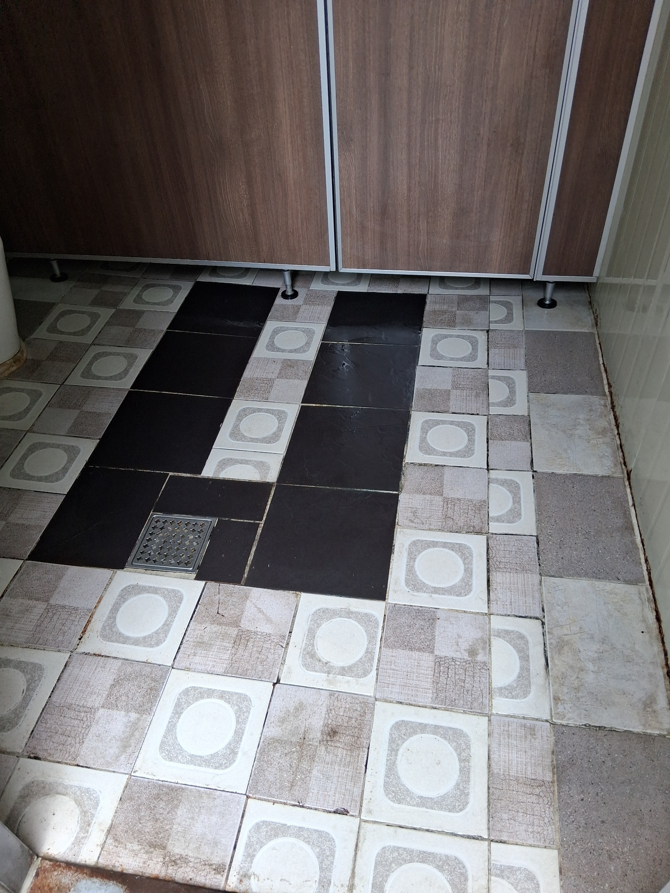

사업장 화장실 대청소 작업사례
오래 사용해 누적된 물때와 생활 오염이 많았던 사업장 화장실을 집중 관리한 현장입니다. 소변기·양변기·세면대 같은 위생도기뿐 아니라 바닥, 모서리, 칸막이 아래까지 함께 정리했습니다.
대청소는 평소 손이 덜 가는 부분까지 확인합니다
화장실 대청소는 눈에 잘 보이는 변기와 세면대만 닦는 작업이 아닙니다. 이용량이 많은 사업장일수록 바닥 모서리, 칸막이 하부, 배수구 주변, 벽 하단에 오염이 누적되므로 전체 공간을 구역별로 확인해야 합니다.
청소 전 상태
오래 사용한 사업장 화장실은 바닥의 먼지와 이물질, 위생도기 주변의 물때와 변색, 손이 잘 닿지 않는 모서리의 누적 오염이 함께 나타나는 경우가 많습니다. 이번 현장은 소변기와 세면대, 양변기, 바닥과 벽 하단까지 여러 곳에 오염이 확인되었습니다.

소변기 하부의 누적 오염
소변기 안쪽과 배수구 주변에 누런 오염과 얼룩이 쌓여 있었습니다. 특히 하부는 물이 고이거나 튀는 일이 반복돼 변색과 냄새 원인이 남기 쉬운 곳입니다. 표면 상태를 먼저 확인한 뒤 위생도기와 주변 바닥을 함께 작업 범위로 잡았습니다.

세면대 표면과 수전 주변 오염
세면대 전체에 뿌연 물때와 생활 오염이 넓게 남아 있었습니다. 수전 주변과 세면볼 가장자리처럼 손이 많이 닿는 부분도 함께 확인했습니다. 오래된 위생도기는 강한 마찰보다 표면 손상을 줄이면서 반복적으로 오염을 정리하는 것이 중요합니다.

양변기와 주변 바닥 상태
양변기 안쪽뿐 아니라 주변 바닥과 벽 하단에도 먼지와 오염이 쌓여 있었습니다. 화장실 대청소는 변기만 깨끗하게 하는 것이 아니라 변기 뒤, 칸막이 아래, 모서리까지 함께 관리해야 전체 청결도가 올라갑니다. 바닥 배수 방향과 물기 상태도 같이 확인했습니다.

바닥 모서리와 이물질 누적
바닥에는 먼지, 생활 이물질, 틈새 오염이 혼재해 있었습니다. 타일 사이 줄눈과 벽면 접합부는 평소 청소에서 놓치기 쉬운 구간입니다. 큰 이물질을 먼저 정리한 뒤 바닥 전체를 구역별로 나누어 청소했습니다.

공용 화장실 전체 바닥 상태
칸막이 아래쪽과 배수구 주변까지 넓게 오염 흔적이 확인되었습니다. 바닥 전체를 한 번에 물청소하면 오염수가 다시 퍼질 수 있어 구역을 나누어 진행하는 방식이 효율적입니다. 눈에 보이는 먼지뿐 아니라 표면에 눌어붙은 오염을 중심으로 정리했습니다.
대청소 후
위생도기와 바닥, 거울과 주변 부속을 순서대로 정리한 뒤 물기와 잔여 오염을 다시 확인했습니다. 노후 타일이나 오래된 실리콘의 변색처럼 청소만으로 복원되지 않는 부분은 그대로 구분하되, 제거 가능한 생활 오염과 묵은 때는 최대한 정리했습니다.

세면대 표면 정리 후
세면볼과 수전 주변의 뿌연 오염을 정리한 뒤 표면이 한층 밝아진 상태입니다. 물이 자주 닿는 부분은 작업 후 물기를 줄여야 다시 얼룩이 생기는 속도를 늦출 수 있습니다. 세면대 아래와 주변 바닥도 함께 확인해 마감했습니다.

소변기 내부와 배수구 정리
소변기 안쪽과 배수구 주변의 눈에 띄는 오염을 정리했습니다. 위생도기 외부와 하부 연결부도 함께 점검해 남아 있는 오염이 없는지 확인했습니다. 노후 설비의 고착 변색은 청소 후에도 일부 남을 수 있으므로 제거 가능한 오염과 재질 변색을 구분해 작업합니다.

양변기 내부 정리 후
양변기 내부와 좌대 주변을 정리한 뒤 사용 전 상태를 다시 확인했습니다. 물이 닿는 내부뿐 아니라 변기 외측과 뒤쪽, 바닥 접합부까지 함께 관리해야 냄새와 오염 재발을 줄이는 데 도움이 됩니다. 마무리 후 물내림과 주변 상태를 확인했습니다.

타일 바닥과 모서리 정리
바닥의 큰 이물질과 표면 오염을 정리해 이동 동선이 한층 깔끔해진 상태입니다. 오래된 타일 자체의 색상 차이나 마모는 남아 있지만, 작업 전보다 오염 경계가 줄고 바닥 관리가 쉬워졌습니다. 배수구 주변과 벽 하단까지 물기 상태를 확인했습니다.

공용 화장실 마감 상태
화장실 전체를 다시 확인하며 소변기, 양변기, 세면대, 칸막이 아래와 바닥을 점검했습니다. 대청소 후에는 정기청소 주기를 잡아 먼지와 물때가 다시 두껍게 쌓이기 전에 관리하는 것이 효율적입니다. 이용량이 많은 사업장은 사용 빈도에 따라 주 1회부터 주 6회까지 관리 주기를 상담할 수 있습니다.
퍼펙트케어 무료 방문견적
현장 규모, 오염 정도, 필요한 작업 범위를 직접 확인한 뒤 작업 범위와 관리 방법을 안내합니다. 양산·김해·부산 사업장 및 생활공간 청소 상담이 가능합니다.